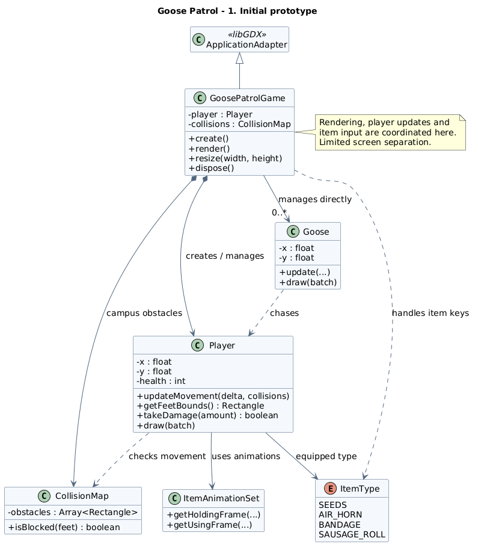
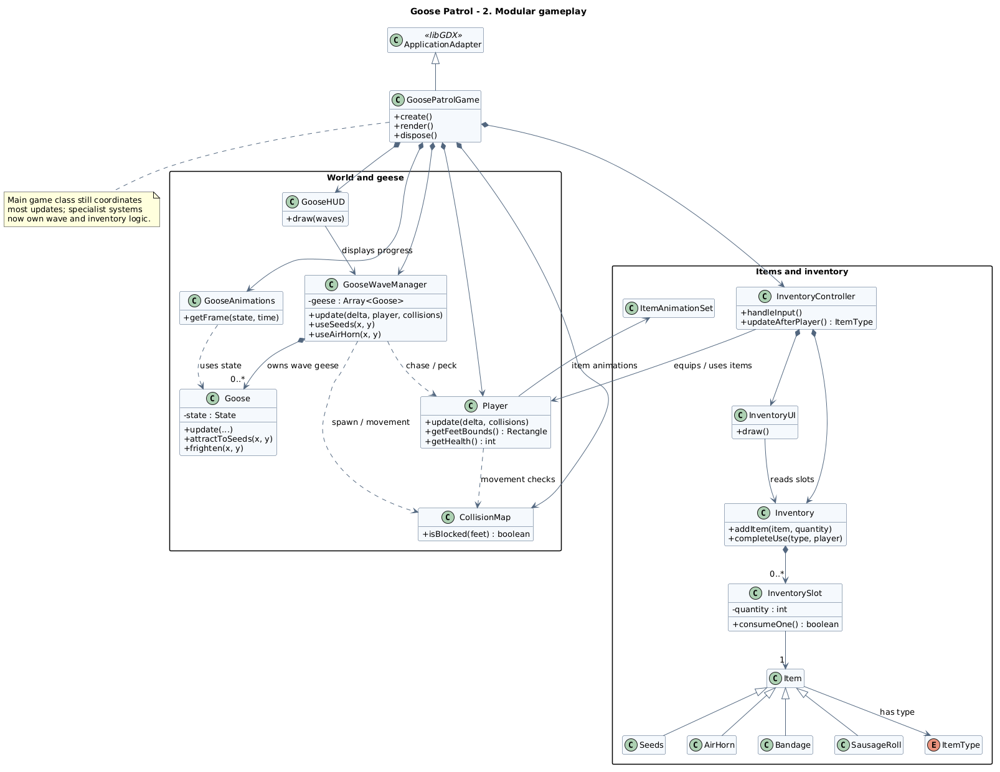
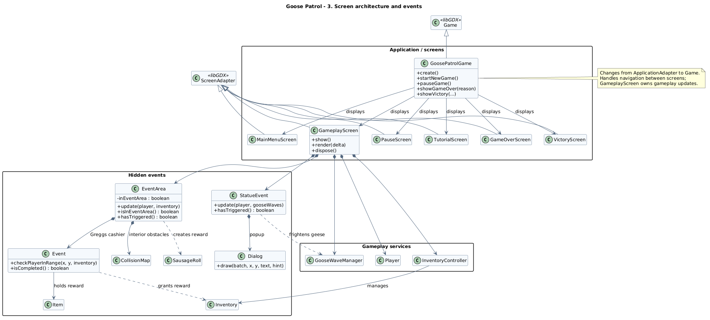
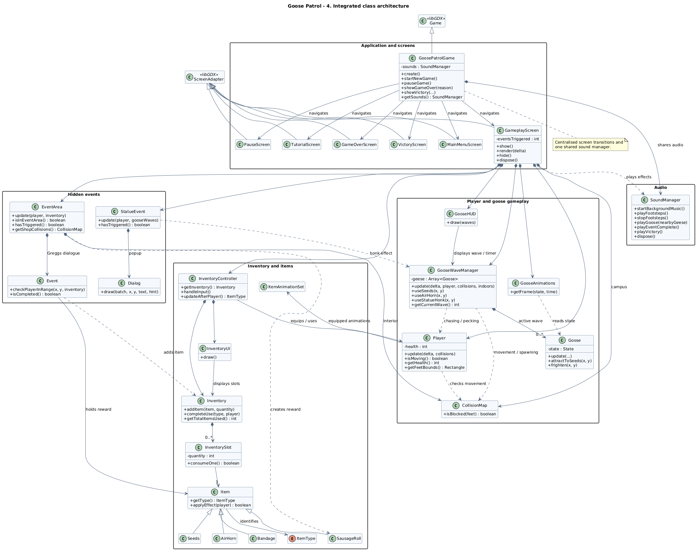
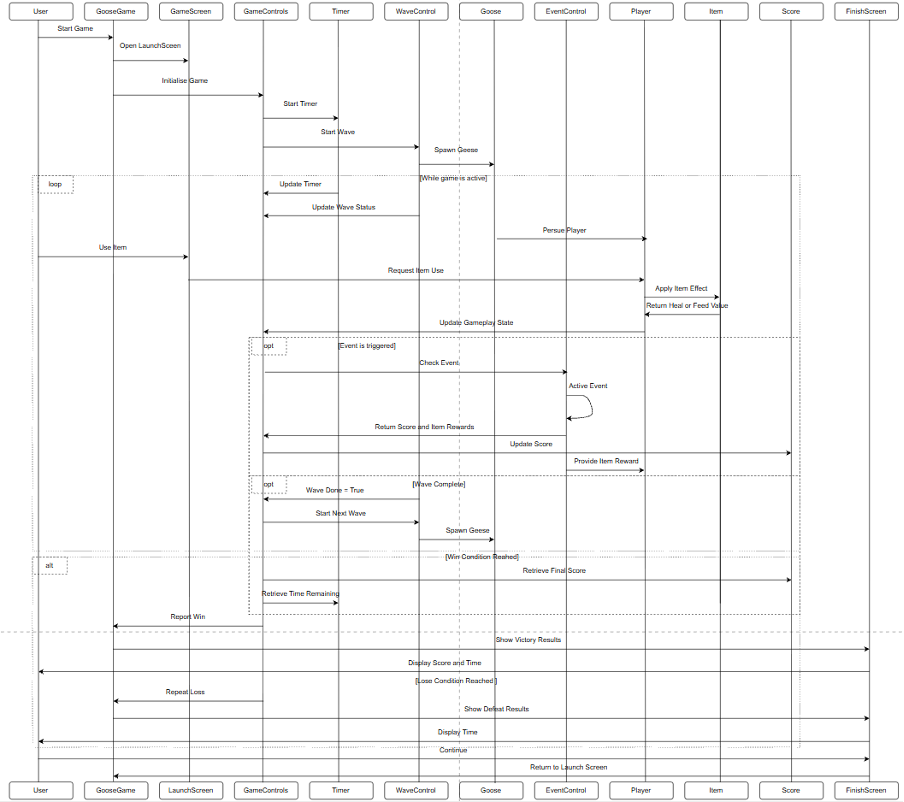
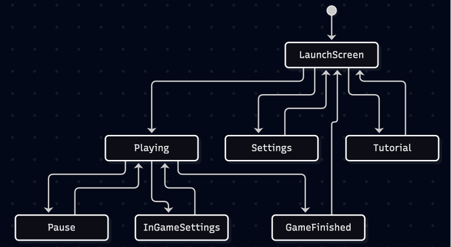
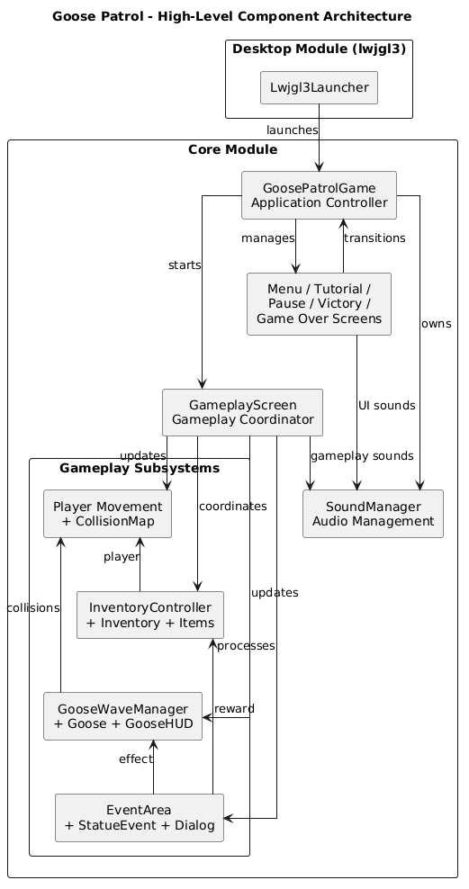
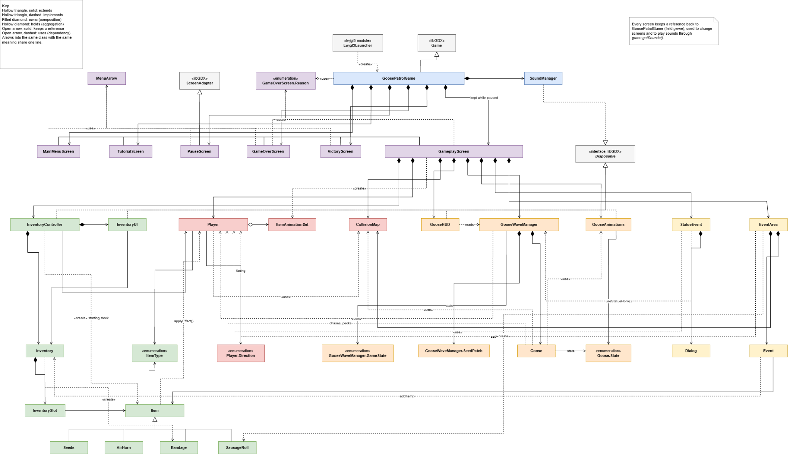
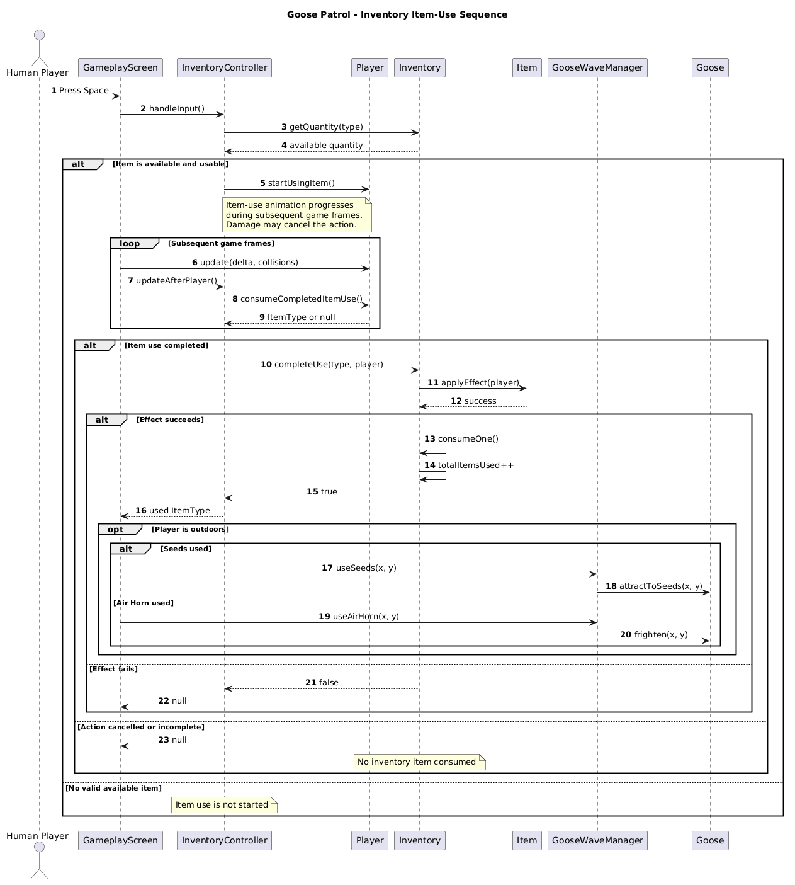
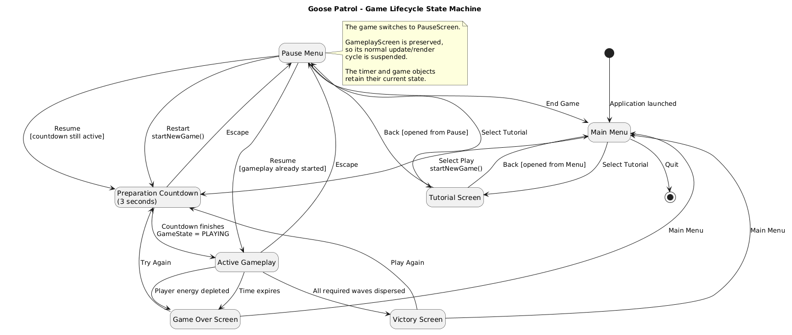

Architecture & design history
Explore how the architecture progressed from the initial prototype to the integrated screen-based game, alongside the final structural and behavioural models.
Class diagram evolution

Initial core model: centralised ApplicationAdapter-based prototype.
View full resolution ↗
Expanded inventory and goose-management responsibilities.
View full resolution ↗
Screen-based application management and event subsystems.
View full resolution ↗
Integrated architectural design reflecting the final modules.
View full resolution ↗Initial behavioural design

An early conceptual design; some proposed controllers and scoring responsibilities changed during implementation.
View full resolution ↗
Early navigation concept, later simplified into explicit menu, tutorial, pause and result screens.
View full resolution ↗Final architecture diagrams

Desktop module, application controller and logical gameplay subsystems.
View full resolution ↗
Comprehensive system structure and class relationships.
View full resolution ↗
Cooperation between gameplay, inventory, player and goose systems.
View full resolution ↗
Transitions between menu, countdown, gameplay, pause and result screens.
View full resolution ↗